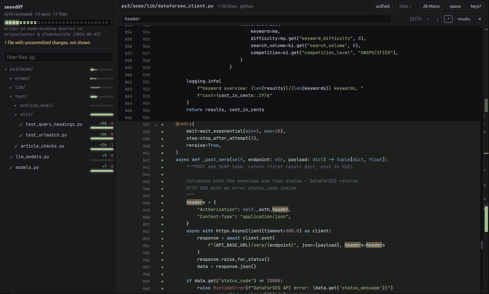
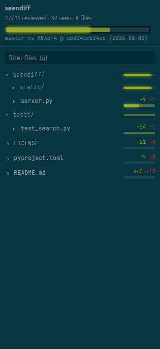
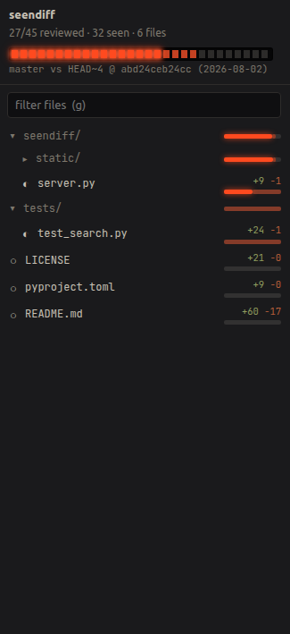
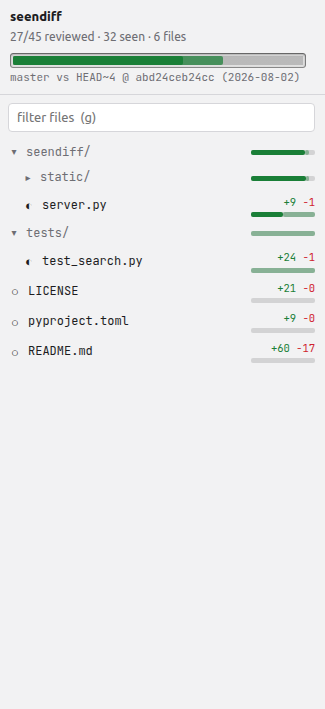
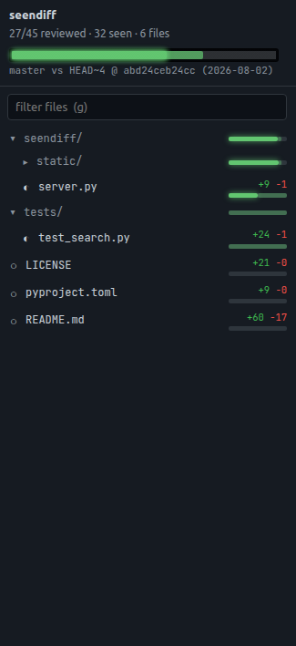
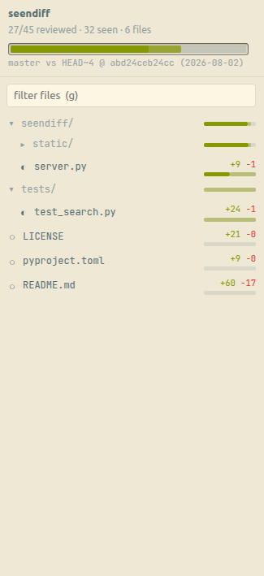
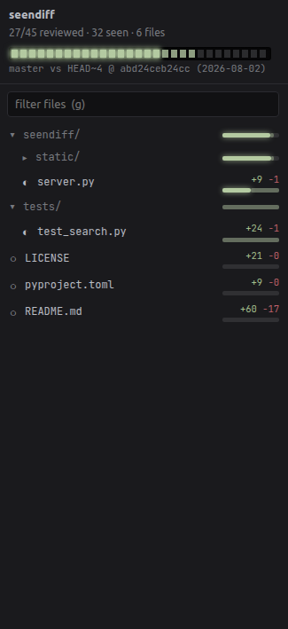
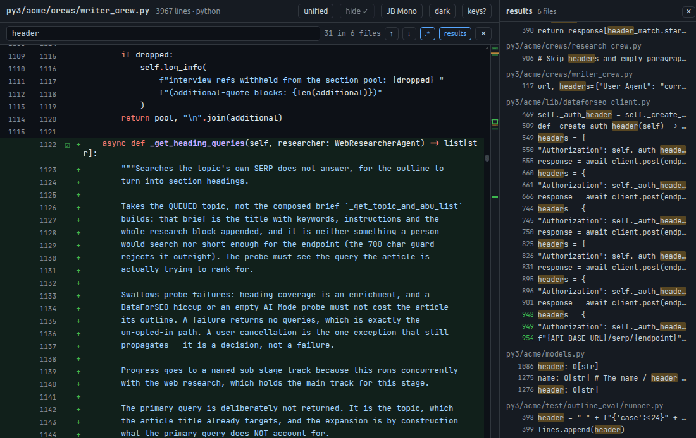
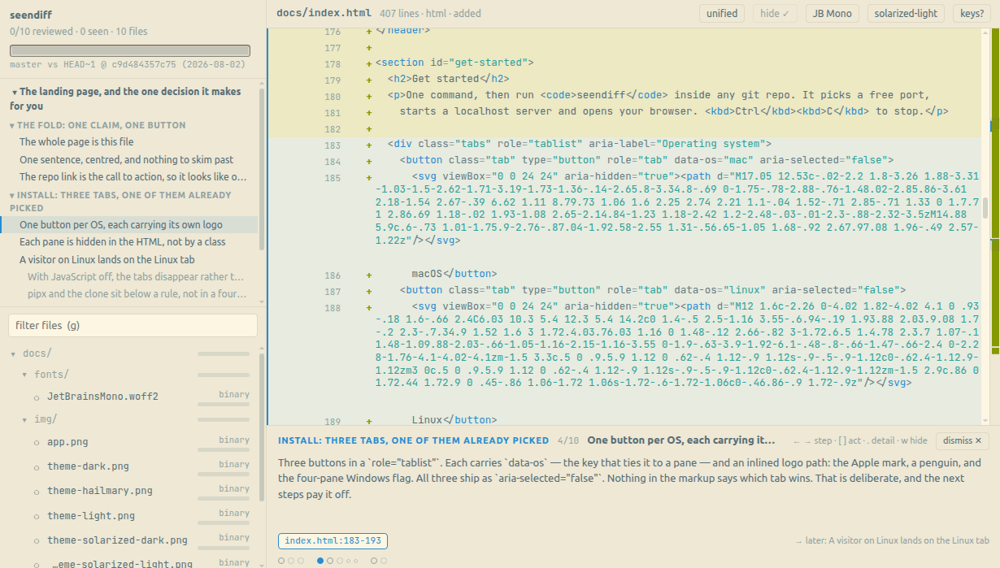

seendiff
A local, point-in-time diff reviewer for large diffs.
View large diffs, while keeping track of what is seen and reviewed.
Optimized for AI coding agents.
Built on: Python · HTML · CSS
acme-dot-bot/seendiff
- Seen — marked automatically when a code block scrolled through your viewport
- Reviewed — explicitly marked using R for the block, f for the whole file
Get started
One command, then run seendiff inside any git repo. It picks a free port,
starts a localhost server and opens your browser. CtrlC to stop.
apt for your package manager.
PATH — without it, run
~/.venvs/seendiff/bin/seendiff. pip install --user works too
if your Python allows it.
Needs Python ≥ 3.10 and git.
Run it
From inside any git repo:
Fast
Designed with scale in mind, for large changes. Thanks to virtualization, a 40,000-line file scrolls smoothly.
Secure
Nothing leaves your machine. No accounts, no telemetry, no network calls outside of localhost.
Easy
Minimal dependencies (four!). Installs in seconds. Nothing to build. No config file.
Your review progress survives a rebase, an amend, and closing the window. Come back tomorrow and pick up where you stopped.
Beautiful
Six themes, each with a matching syntax palette, so colours change with the chrome instead of staying bolted to one scheme. Hover a card to bring it forward.






Details that matter for a reviewer
A minimap runs down the side of the file: one glance tells you what you have seen, what you haven't, and what is still unreviewed.
Search covers the file you are in and every other changed file at once.

Fully keyboard driven
| ← → | prev / next change block in this file |
| ↑ ↓ | prev / next file |
| R | mark block reviewed, advance (toggles off if reviewed) |
| n N | next / prev unreviewed block, crosses files |
| j k | scroll lines |
| d u | scroll half page |
| V | mark all seen-but-unreviewed blocks in file reviewed |
| f | mark whole file reviewed, next file |
| y | copy ref + content (selection or focused block) |
| Y | copy refs for all unreviewed blocks in file |
| s | toggle side-by-side / unified |
| CtrlF | search all changed files — ⏎ / ⇧⏎ next / prev · Esc closes |
| g | focus file filter |
| h | hide fully-reviewed files |
| t | cycle theme |
| X | reset all seen / reviewed state (asks first) |
| ? | help · Esc closes |
Code walkthrough skill
AI + Human > AI or Human.
AI is a super-coder, but lacks the awareness and context to make the tradeoffs that drive your design decisions.
Any sane codebase wants a pair of trained human eyes on it.
This project was born out of that need.
To that end, seendiff ships with a walkthrough mode — where a coding agent explains itself, step by step, on the diff.
Makes it easier to use the coding agent to understand the code it has written.
Ask your coding agent to install the skill, once:
Then, in any repo, ask for the walkthrough you want:
